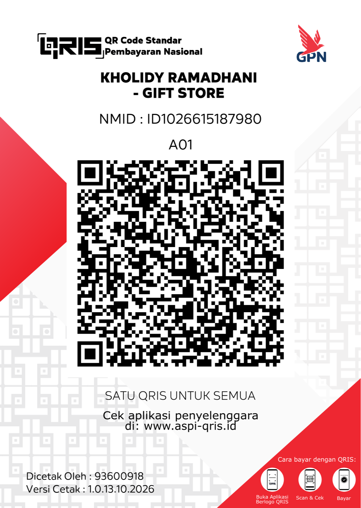

📘 Manajemen Perubahan
120 Soal
0/0
|
✅
0
❌
0
🎯
0%
🌙
⚙️ Pengaturan Latihan
Total soal:
120
📚 Semua Soal
🔢 Pilih Jumlah
📏 Rentang
☑️ Pilih Tertentu
🎲 Acak
🚀 Mulai Latihan
🔄 Mulai Ulang
💡 Pilih mode lalu klik "Mulai Latihan"
🎯 Mode Ujian (hasil & pembahasan di akhir)
💳
Dukung Perjalanan Ibadah

Gasan Naik Haji
🔹 Scan QRIS untuk berdonasi 🔹
Soal 1
1 / 120
◀ Sebelum
Berikut ▶
Loading...
➡️ Soal Berikutnya
📋 Review
🔄 Mulai Ulang Latihan
📋 Review Jawaban
✕ Tutup
Semua
✅ Benar
❌ Salah
⬜ Belum
🏆
0%
✅ Benar:
0
| ❌ Salah:
0
🔁 Kerjakan Ulang Soal Salah
🔄 Mulai Ulang
📋 Lihat Review